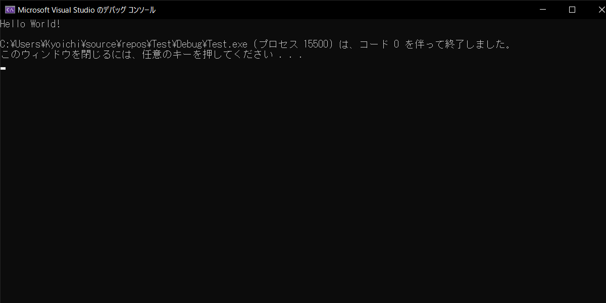

画面への文字の表示ができるようなプログラムの作り方を紹介します。

前回紹介したこのプログラムで、Hello World!が画面に出るようになります！
それぞれの行で何をやっているのかの説明は後でやるとして、まずはコードを写して実行してみましょう。
#include <iostream>
using namespace std;
int main() {
cout << "Hello World!" << endl;
return 0;
}
プログラムの実行
ソースコードを読み取りプログラムとして実行するにはコマンドを入力する必要があります。
ctrl + F5
これら２つのキーを同時押しするとコンパイル(ソースコードをプログラムに変換する作業)が始まります。
しばらくするとこのようなウィンドウが表示されます。これで画面に文字を表示するプログラムを作れるようになりました！
説明
プログラムは基本的に上から下に向けて実行されます。
#include <iostream>
using namespace std;
int main() {
cout << "Hello World!" << endl;
return 0;
}
2行目の#include <iostream>では、このソースコードに入出力をするための拡張機能のようなものを用意させています。
iostreamがあることで出力するための命令であるcoutが使えるようになります。
iostreamはinput output streamの略です。
4行目のusing namespace std;では、本来は書かなければいけないことを省略できるようにしています。
本来、coutはstd::coutと書かなければいけないのですが、いちいち書くのは面倒なので、省略します。
6行目のint main() {から、9行目の}までがプログラムの内容となります。プログラムはこの波カッコ{}の中に書く必要があります。
7行目で画面に文字を出力しています。
coutの後に<<文字列と置くことで文字列が表示されます。
文字列はダブルクォーテーション""で囲む必要があります。
そのあとに改行を意味するendlを出力しています。
8行目でプログラムが正常に終了したことをパソコンに伝えています。
まとめ
- プログラムは
int main(){}の波カッコ{}の中に書く - 文字の表示には
coutを使う - 文字列はダブルクォーテーション""で囲む